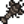

Kochen
Kochen ist eine Spielmechanik, die nach dem ersten Ausbau des Bauernhauses verfügbar ist. Der Ausbau beinhaltet eine Küche inklusive Herd und Kühlschrank. Der Herd dient als Kochoberfläche zur Herstellung sämtlicher Gerichte. Der Kühlschrank dagegen hat 36 Lagerplätze, vergleichbar mit einer Kiste. Das Einzigartige am Kühlschrank ist, dass er direkt mit der Kochoberfläche verknüpft ist; So, als wäre er eine Erweiterung des Spielerinventars. Nur Zutaten im Spielerinventar oder im Kühlschrank können für das Kochen nach Rezept verwendet werden.
Der Spieler muss jedes einzelne Rezept erst erlernen, bevor er es kochen kann. Gesperrte Rezepte werden mit einer schwarzen Silhouette um das Rezeptsymbol angezeigt. Im Tooltip ist "???" zu lesen. Freigespielte (erlernte) Rezepte erscheinen ausgegraut, wenn irgendeine Zutat fehlt, im Tooltip werden aber Informationen zum Rezept angezeigt. Fehlende Zutaten werden in rot hervorgehoben. Wenn alle benötigten Zutaten entweder im Spielerinventar oder im Kühlschrank vorhanden sind, wird das Rezeptsymbol komplett angezeigt.
Attributsboni
Der Verzehr eines Lebensmittels, welches die Attribute beeinflusst, wird jegliche andere gerade aktive Effekte ersetzen. Der Spieler erhält also nach dem Verzehr nur die Boni des letztverzehrten Lebensmittels.
Die Wirkung der Attributsboni hält immer nur eine gewisse Zeit an. Die genaue Restdauer wird angezeigt, wenn man mit dem Mauszeiger auf das entsprechende Symbol zeigt. Mit dem Schlafen-Gehen enden auch alle Attributsboni, die durch Lebensmittelverzehr erlangt wurden. Mit fortschreitendem Verlauf des Tages wird der Verzehr von boniverleihenden Lebensmitteln zunehmend unwirtschaftlich. Fischeintopf zum Beispiel steigert die Fischen-Fähigkeit um +3 für über 16 Minuten. Direkt nach dem Aufstehen verzehrt hält die Wirkung also den ganzen Tag über an (13,5 Minuten Real-Zeit entsprechen einem 18-Stunden-Tag im Spiel bei normalem Zeitablauf). Wird der Fischeintopf erst um 22:00 Uhr gegessen, hält die Wirkung nur etwa 2 - 3 Minuten an (bis maximal 02:00 Uhr).
Erfolge
Es gibt drei Erfolge, die auf Kochen basieren:
- Koch (Bereite 10 verschiedene Rezepte zu.)
- Souschef (Bereite 25 verschiedene Rezepte zu.)
- Gourmetkoch (Bereite alle Rezepte zu.)
Sammlungen

Erste Seite
Zweite Seite
| Hummer-Bisque | Ahornriegel | Krabbenkuchen | Krabbencocktail | Ginger Ale | Bananenpudding | Mango Klebreis | Poi | Tropisches Curry | Tintenfisch-Tintenravioli |
| Moos-Suppe |
Qi-Würze
Qi-Würze kann, sobald geöffnet, im Geheimen Walnusszimmer von Mr. Qi für 10  Qi Edelsteine je 10 Würze gekauft werden. Befindet sich Qi-Würze im Inventar, dem Kühlschrank oder einem Mini-Kühlschrank bewirkt diese, dass jegliches gekochte Gericht eine goldene Qualität aufweist. Gekochte Gerichte mit goldener Qualität erzielen einen 50% höheren Verkaufspreis als von normaler Qualität und stellen bei Konsum 80% mehr Gesundheit und Energie her. Sie erhöhen auch die Stärke und Dauer (+50%) von erhaltenen Buffs nach Konsum um +1, mit der Ausnahme von Geschwindigkeit. Zum Beispiel steigert ein gewürzter Meerschaumpudding das Fischen um +5 anstelle von +4 und hält 5:15 Minuten anstelle von 3:30 Minuten.
Qi Edelsteine je 10 Würze gekauft werden. Befindet sich Qi-Würze im Inventar, dem Kühlschrank oder einem Mini-Kühlschrank bewirkt diese, dass jegliches gekochte Gericht eine goldene Qualität aufweist. Gekochte Gerichte mit goldener Qualität erzielen einen 50% höheren Verkaufspreis als von normaler Qualität und stellen bei Konsum 80% mehr Gesundheit und Energie her. Sie erhöhen auch die Stärke und Dauer (+50%) von erhaltenen Buffs nach Konsum um +1, mit der Ausnahme von Geschwindigkeit. Zum Beispiel steigert ein gewürzter Meerschaumpudding das Fischen um +5 anstelle von +4 und hält 5:15 Minuten anstelle von 3:30 Minuten.
Rezepte
| Bild | Name | Beschreibung | Zutaten | Energie / Gesundheit | Buff(s) | Buffdauer | Rezeptquelle | Verkaufspreis | |||
|---|---|---|---|---|---|---|---|---|---|---|---|
| Spiegelei | Leicht angebraten. | N/A | N/A | 1. Bauernhausausbau | |||||||
| Omelett | Es ist super luftig. | N/A | N/A |
|
|||||||
| Salat | Ein gesunder Gartensalat. | N/A | N/A |
|
|||||||
| Überbackener Blumenkohl | Riecht großartig! | N/A | N/A |
|
|||||||
| Gebackener Fisch | Gebackener Fisch auf einem Kräuterbett. | N/A | N/A |
|
|||||||
| Pastinakensuppe | Sie ist herzhaft und frisch. | N/A | N/A |
|
|||||||
| Gemüseeintopf | Sehr nahrhaft. | N/A | N/A |
|
|||||||
| Volles Frühstück | Du wirst danach die Welt erobern können! |
|
|||||||||
| Gebratener Tintenfisch | Er ist so zäh. | N/A | N/A |
|
|||||||
| Komisches Brötchen | Was wohl darin ist? | N/A | N/A |
|
|||||||
| Glücksmahlzeit | Eine besondere kleine Mahlzeit. |
|
|||||||||
| Gebratene Pilze | Erdig und aromatisch. |
|
|||||||||
| Pizza | Wegen der richtigen Gründe beliebt. | N/A | N/A |
|
|||||||
| Bohneneintopf | Ist ganz schön gesund. |
|
|||||||||
| Glasierte Süßkartoffeln | Süß und sättigend... Der Zucker gibt dem Ganzen einen Hauch von Karamell. | N/A | N/A |
|
|||||||
| Karpfen-Überraschung | Mild und ölig. | N/A | N/A |
|
|||||||
| Kartoffelpuffer | Knusprig und goldbraun! |
|
|||||||||
| Pfannkuchen | Ein Stapel luftig weicher Pfannkuchen. |
|
|||||||||
| Lachs-Mahlzeit | Der Spritzer Zitrone ist der Clou dabei. | N/A | N/A |
|
|||||||
| Fisch-Taco | Riecht lecker. |
|
|||||||||
| Knuspriger Barsch | Wow, die Panade ist perfekt. |
|
|||||||||
| Paprika-Popper | Würzige, panierte Paprika mit Käse gefüllt. |
|
|||||||||
| Brot | Ein knuspriges Baguette. | N/A | N/A |
|
|||||||
| Tom Kha-Suppe | Die verschiedenen Aromen sind unglaublich! |
|
|||||||||
| Forellensuppe | Ziemlich salzig. |
|
|||||||||
| Schokoladentorte | Mächtig und saftig, mit einer dicken Karamellglasur. | N/A | N/A |
|
|||||||
| Pinke Torte | Kleine herzförmige Süßigkeiten sind darauf verstreut. | N/A | N/A |
|
|||||||
| Rhabarberkuchen | Mmmh, herb und süß! | N/A | N/A |
|
|||||||
| Kekse | Sehr süß und knusprig. | N/A | N/A |
|
|||||||
| Spaghetti | Ein Klassiker. | N/A | N/A |
|
|||||||
| Gebratener Aal | Fettig, aber schmackhaft. |
|
|||||||||
| Würziger Aal | Er ist richtig scharf! Sei vorsichtig. |
|
|||||||||
| Sashimi | Roher Fisch in dünne Scheiben geschnitten. | N/A | N/A |
|
|||||||
| Maki-Rolle | Fisch und Reis, in Seetang gewickelt. | N/A | N/A |
|
|||||||
| Tortilla | Kann als Hülle für Essen genutzt oder direkt gegessen werden. | N/A | N/A |
|
|||||||
| Rote Platte | Voller Antioxidantien. |
|
|||||||||
| Auberginen-Parmesan | Würzig, käsig und wundervoll. |
|
|||||||||
| Milchreis | Cremig, süß und immer wieder eine Freude. | N/A | N/A |
|
|||||||
| Eis | Es gibt wohl kaum jemanden, der das nicht mag. | N/A | N/A |
|
|||||||
| Blaubeertörtchen | Fein und erfrischend. | N/A | N/A |
|
|||||||
| Herbstfülle | Der Geschmack des Herbstes. |
|
|||||||||
| Kürbissuppe | Beliebt im Herbst. |
|
|||||||||
| Super-Mahlzeit | Eine perfekte energiespendende Mahlzeit. |
|
|||||||||
| Preiselbeersoße | Ein festlicher Leckerbissen. |
|
|||||||||
| Füllung | Ahh... der Geruch von warmem Brot und Salbei. |
|
|||||||||
| Bauernmahlzeit | Um wieder zu Kräften zu kommen. | ||||||||||
| Überlebensburger | Ein praktischer Snack für Erkunder. | ||||||||||
| Matrosenteller | Das wird dich in der kalten Meeresluft warm halten. | ||||||||||
| Bergarbeiter-Leckerbissen | Das sollte deine Energiereserven gefüllt halten. | ||||||||||
| Wurzelplatte | Danach willst du definitiv noch mehr buddeln. | ||||||||||
| Dreifacher Espresso | Er ist stärker als normaler Kaffee! | ||||||||||
| Meerschaumpudding | Dieser Briny Pudding wird Sie wirklich in die maritime Denkweise bringen! | ||||||||||
| Algensuppe | Ein wenig schleimig. | N/A | N/A |
|
|||||||
| Bleiche Brühe | Eine feine Brühe mit einem Hauch von Schwefel. | N/A | N/A |
|
|||||||
| Plumpudding | Ein traditioneller Feiertagsleckerbissen. | N/A | N/A |
|
|||||||
| Artischockendip | Kühl und erfrischend. | N/A | N/A |
|
|||||||
| Gemüsepfanne | Gestifteltes Gemüse auf einem Reisbett. | N/A | N/A |
|
|||||||
| Geröstete Haselnüsse | Der Röstprozess sorgt für einen tiefen Waldgeschmack. | N/A | N/A |
|
|||||||
| Kürbiskuchen | Geschmeidige Kürbiscreme in einer flockigen Kruste. | N/A | N/A |
|
|||||||
| Radieschensalat | Die Radieschen sind so knackig! | N/A | N/A |
|
|||||||
| Obstsalat | Eine leckere Kombination verschiedener Sommerfrüchte. | N/A | N/A |
|
|||||||
| Brombeer-Pastete | Einfach unvergleichlich. | N/A | N/A |
|
|||||||
| Preiselbeer-Süßigkeit | Süß genug, um die bittere Frucht zu überspielen. | N/A | N/A |
|
|||||||
| Bruschetta | Geröstete Tomaten auf einem knackigen Weißbrot. | N/A | N/A |
|
|||||||
| Kohlsalat | Leicht, frisch und sehr gesund. | N/A | N/A |
|
|||||||
| Straußfarn-Risotto | Ein cremiges Reisgericht mit gedünstetem Straußfarn. Schmeckt ein wenig fade. | N/A | N/A |
|
|||||||
| Mohnmuffin | Hat einen beruhigenden Effekt. | N/A | N/A |
|
|||||||
| Fischsuppe | Die beste Methode, um dich nach kalten Nächten auf See zu wärmen. |
|
|||||||||
| Hummer-Bisque | Diese feine Suppe ist ein geheimes Familienrezept von Willy. |
|
|||||||||
| Fischeintopf | Riecht wie das Meer. Schmeckt aber besser. |  Flusskrebs (1) |
|
||||||||
| Schneckengericht | Mit Butter durchtränkte Schnecken, bis zur Perfektion gekocht. |
|
|||||||||
| Ahornriegel | Ein süßer Riegel mit einer dicken Ahornglasur. |
|
|||||||||
| Krabbenkuchen | Krabbe, Brotkrümel und Eier, die zu einer Frikadelle geformt und dann goldbraun gebraten werden. |
|
|||||||||
| Krabbencocktail | Eine üppige Vorspeise aus frisch gefangenen Garnelen. |
|
|||||||||
| Ginger Ale | Eine pikante Limonade, bekannt für seine beruhigende Wirkung auf den Magen. | Zwergenshop im Vulkan auf Ingwerinsel ( |
|||||||||
| Bananenpudding | Ein cremiges Dessert mit einem wunderbaren tropischen Geschmack. |
|
|||||||||
| Mango Klebreis | Süße Mango und Kokosnuss verwandeln diesen Reis in etwas ganz Besonderes. |
|
|||||||||
| Poi | Ein traditionelles Essen mit einem delikaten, süßen Geschmack, wenn es frisch verzehrt wird. | N/A | N/A |
|
|||||||
| Tropisches Curry | Ein exotisches, duftendes Curry, serviert in einer Ananasschale. | ||||||||||
| Tintenfisch-Tintenravioli | Schützt vorübergehend vor Schwächungen. | Tintenravioli Buff) |
Zutaten
Es werden mindestens 87 verschiedene Zutaten benötigt, um alle 80 Gerichte des Spiels zu zubereiten, inklusive:
- 26 Nutzpflanzen
- 13 Gesammeltes
- 4 Baumobst
- 2 Tierische Erzeugnisse
- 4 Handwerkswaren
- 2 Verschiedenes (Ahornsirup, Tintenfisch Tinte)
- 17 Gegenstände vom Fischen
- 8 Krabbenreusesfänge
- 5 Gegenstände aus Pierres Gemischtwarenladen
- 6 Gerichte als Zutaten
Diese Tabelle geht davon aus, dass hergestellte Gerichte genutzt werden, um weitere Gerichte zu kochen. Zum Beispiel wird 1 Kartoffel genutzt, um 1 Kartoffelpuffer zu kochen, der dann wiederum in ein Volles Frühstück gekocht wird.
Nutzpflanzen
| Bild | Name | Benötigte Menge | Jahreszeit | Tage bis zur Ernte | Notizen | Wird benötigt für |
|---|---|---|---|---|---|---|
| Pastinake | 2 | Frühling | 4 Tage | |||
| Grünkohl | 2 | Frühling | 6 Tage | Mit der Sense ernten | ||
| Kartoffel | 2 | Frühling | 6 Tage | Hat eine 20% Wahrscheinlichkeit extra Katroffeln zu erbringen | ||
| Blaue Jazz | 1 | Frühling | 7 Tage | |||
| Grüne Bohne | 2 | Frühling | 10 Tage | Wächst an einem Rankgitter. Produziert alle 3 Tage erneut. | ||
| Blumenkohl | 1 | Frühling | 12 Tage | Kann zu einer Riesen-Nutzpflanze werden | ||
| Rhabarber | 1 | Frühling | 13 Tage | Saat erhältlich in der Oase | ||
| Knoblauch | 2 | Frühling | 4 Tage | Verfügbar ab Jahr 2 | ||
| Peperoni | 3 | Sommer | 5 Tage | Produziert alle 3 Tage erneut. | ||
| Radieschen | 2 | Sommer | 6 Tage | |||
| Mohn | 1 | Sommer | 7 Tage | |||
| Tomate | 8 | Sommer | 11 Tage | Produziert alle 4 Tage erneut. | ||
| Melone | 2 | Sommer | 12 Tage | Kann zu einer Riesen-Nutzpflanze heranwachsen | ||
| Blaubeere | 2 | Sommer | 13 Tage | Produziert mehrere Blaubeeren bei jeder Ernte. Produziert alle 4 Tage eine weitere Ernte. | ||
| Mais | 2 | Sommer/Herbst | 14 Tage | Produziert alle 4 Tage eine weitere Ernte. | ||
| Rotkohl | 3 | Sommer | 9 Tage | Verfügbar ab Jahr 2 | ||
| Senfkohl | 1 | Herbst | 4 Tage | |||
| Aubergine | 2 | Herbst | 5 Tage | Produziert alle 5 Tage eine weitere Ernte. | ||
| Amarant | 1 | Herbst | 7 Tage | Mit der Sense ernten | ||
| Preiselbeere | 4 | Herbst | 7 Tage | Produziert 2 Preiselbeeren pro Ernte. Produziert alle 5 Tage eine weitere Ernte | ||
| Süßkartoffel | 2 | Herbst | 10 Tage | |||
| Kürbis | 3 | Herbst | 13 Tage | Kann zu einer Riesen-Nutzpflanze heranwachsen | ||
| Rübe | 1 | Herbst | 6 Tage | Saat erhältlich in der Oase | ||
| Artischocke | 2 | Herbst | 8 Tage | Verfügbar ab Jahr 2 | ||
| Ananas | 1 | Sommer | 14 Tage | |||
| Taro-Wurzel | 4 | Sommer | 10 Tage |
Gesammeltes
| Bild | Name | Benötigte Menge | Jahreszeit | Ort | Wird benötigt für |
|---|---|---|---|---|---|
| Brombeere | 2 | Herbst | Pelikan Stadt | ||
| Höhlenkarotte | 5 | Alle Jahreszeiten | Minen | ||
| Gewöhnlicher Pilz | 3 | Frühling/Herbst | Pelikan Stadt | ||
| Löwenzahn | 1 | Frühling | Pelikan Stadt | ||
| Kokosnuss | 2 | Alle Jahreszeiten | Calico-Wüste | ||
| Straußfarn | 1 | Sommer | Geheime Wälder | ||
| Haselnuss | 4 | Herbst | Pelikan Stadt | ||
| Wilder Meerrettich | 1 | Frühling | Pelikan Stadt | ||
| Lauch | 1 | Frühling | Pelikan Stadt | ||
| Morchel | 1 | Frühling | Die Höhle, Geheime Wälder | ||
| Wildpflaume | 2 | Herbst | Pelikan Stadt | ||
| Winterwurzel | 1 | Winter | Pelikan Stadt, Minen | ||
| Ingwer | 3 | Alle Jahreszeiten | Auf der Ingwerinsel, Beute von Tigerschleimen |
Baumobst
| Bild | Name | Benötigte Menge | Herkunft | Jahreszeit | Wird benötigt für |
|---|---|---|---|---|---|
| Apfel | 1 | Apfelbaum | Herbst | ||
| Aprikose | 1 | Aprikosenbaum | Frühling | ||
| Banane | 1 | Bananenbaum | Sommer | ||
| Mango | 1 | Mangobaum | Sommer |
Tierische Erzeugnisse
Hinweis: Alle Rezepte, die Milch benötigen akzeptieren sowohl Milch als auch Große Milch. Auch Ziegenmilch und Große Ziegenmilch kann in jeglichem Rezept, das Milch benötigt verwendet werden.
Für Eierrezepte werden alle Hühnereier, inklusive Schatteneier akzeptiert.
| Bild | Name | Benötigte Menge | Herkunft | Notizen | Wird benötigt für |
|---|---|---|---|---|---|
| Ei | 8 | Hühner |
|||
| Milch | 12 |  Kühe |
Gewinnung mit Melkkübel |
Handwerkswaren
Kaffee kann auch von der Kneipe für  300 G erworben werden, anstelle ihn herzustellen.
300 G erworben werden, anstelle ihn herzustellen.
| Bild | Name | Benötigte Menge | Herkunft | Rohstoff | Produktionszeit | Wird benötigt für |
|---|---|---|---|---|---|---|
| Käse | 3 | Käsepresse | 3,3 Stunden | |||
| Mayonnaise | 2 | Mayonnaise-Maschine | 3 Stunden | |||
| Schattenmayonnaise | 1 | Mayonnaise-Maschine | 3 Stunden | |||
| Kaffee | 3 | Fass | 2 Stunden |
Verschiedenes
| Bild | Name | Benötigte Menge | Herkunft | Produktionszeit | Wird benötigt für |
|---|---|---|---|---|---|
| Ahornsirup | 1 | Angezapfter Ahornbaum | 7-8 Tage | ||
| Tintenfisch Tinte | 2 | Tintenkind Beute, Fischteich mit Tintenfischen oder Mitternächtlichen Tintenfischen | Variiert je nach Population im Fischteich |
Fisch
Zutaten aus der Krabbenreuse
Venusmuscheln und Miesmuscheln können jederzeit vom Strand gesammelt werden. Krabben können als Beute von Stein-Krabben oder Lava-Krabben in den Minen erhalten werden.
| Bild | Name | Benötigte Menge | Fangort | Wird benötigt für |
|---|---|---|---|---|
| Hummer | 1 | Ozean | ||
| Venusmuschel | 1 | Ozean | ||
| Flusskrebs | 1 | Süßwasser | ||
| Krabbe | 1 | Ozean | ||
| Miesmuschel | 1 | Ozean | ||
| Garnele | 2 | Ozean | ||
| Schnecke | 1 | Süßwasser | ||
| Strandschnecke | 2 | Süßwasser |
Gegenstände aus dem Gemischtwarenladen
Von Pierre in Pierres Gemischtwarenladen gekauft.
Gerichte als Zutaten
Diese Gerichte sind gleichzeitig Zutaten für weitere Gerichte. Die benötigten Zutaten sind bereits in der obigen Liste enthalten.
| Bild | Name | Benötigte Menge | Zutaten | Wird benötigt für |
|---|---|---|---|---|
| Spiegelei | 1 | |||
| Kartoffelpuffer | 2 | |||
| Pfannkuchen | 1 | |||
| Tortilla | 2 | |||
| Brot | 3 | |||
| Omelett | 1 |
Profitable Rezepte
- Siehe auch: Wann Fische zu Sashimi verarbeiten
Die meisten Gerichte erzielen beim Verkauf weniger, als ihre Zutaten im Verkauf eingebracht hätten. Es gibt aber einige Gerichte, die immer etwas Profit abwerfen, wenn Zutaten der geringsten Qualitätsstufe (ohne Stern) verwendet werden. Es handelt sich dabei um folgende Rezepte:
|
☆Nicht profitabel mit den Berufen Fischer oder Angler
|
Wenn Profit jedoch das Ziel ist, ist es immer besser die Zutaten zu verarbeiten, z.B. mittels Einmachgefäß, Fass, Mayonnaise-Maschine oder Käsepresse.
Die einzigen nennenswerten Ausnahmen sind Algensuppe (+ 40 G), Bleiche Brühe (+
40 G), Bleiche Brühe (+ 100 G), Wurzelplatte aus regulären Winterwurzeln (+
100 G), Wurzelplatte aus regulären Winterwurzeln (+ 5 G) und Sashimi aus billigem Fisch, da Kochen der einzige Weg ist, um Algen, Höhlenkarroten, Winterwurzeln und Fische zu verarbeiten. Abgesehen von dieses 4 Rezepten wird das profitable Kochen nur dann attraktiv, wenn die Zutatenproduktion die Verarbeitungskapazität weit übersteigt.
5 G) und Sashimi aus billigem Fisch, da Kochen der einzige Weg ist, um Algen, Höhlenkarroten, Winterwurzeln und Fische zu verarbeiten. Abgesehen von dieses 4 Rezepten wird das profitable Kochen nur dann attraktiv, wenn die Zutatenproduktion die Verarbeitungskapazität weit übersteigt.
Aufträge
Frisch gekochte Produkte im Wert von  100.000 G werden in dem Spezialauftrag Qis Küche verlangt. Wird gekocht, während der Auftrag aktiv ist, so erhält jegliches Gericht den Zusatz frisch gekocht. Diese Gerichte stapeln sich nicht mit Gerichten, die vor dem Auftrag gekocht werden.
100.000 G werden in dem Spezialauftrag Qis Küche verlangt. Wird gekocht, während der Auftrag aktiv ist, so erhält jegliches Gericht den Zusatz frisch gekocht. Diese Gerichte stapeln sich nicht mit Gerichten, die vor dem Auftrag gekocht werden.
Geschichte
- Zwischen v1.11 und v1.3 wurde ein Fehler behoben, bei dem Wirkungszeiten von Stärkungen im Laufe des Tages abnahmen.
- 1.3: Artischockendip, Kürbiskuchen, Fischsuppe und Hummer-Bisque akzeptieren jetzt Große Milch anstelle von normale Milch.
- 1.4: Krabbencocktail, Meerschaumpudding und Dreifacher Espresso hinzugefügt. Fehler beim Bohneneintopfbuff behoben. Kochleiste in allen Sprachen standardisiert. Mini-Kühlschrank als Lagerort für Zutaten hinzugefügt.
- 1.5: Bananenpudding, Ginger Ale, Mango Klebreis, Poi, Tropisches Curry und Tintenfisch-Tintenravioli hinzugefügt. Ziegenmilch und Große Ziegenmilch kann jetzt in Rezepten verwendet werden.